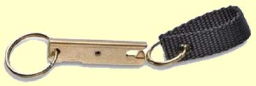
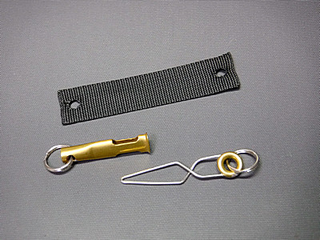
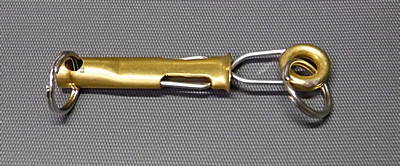
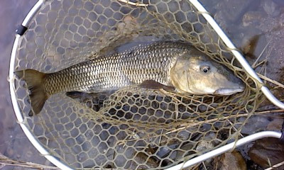

私のお気に入り
釣り道具 ネットリトリーバー 昌栄：クイックリリースホルダー
及び Caps：QuickNet Release
2019年6月末の、奥只見釣行の際に、古くからの釣友である岡田君が、珍しいタイプのランディングネットリトリーバーを使っていた。現在主流となっているマグネット式ではなく、プラスチック製の部品の噛み合わせでネットを保持するしくみだった。訊くと、東京のフライタックルショップで見つけたとのこと。
やっぱりネットリトリーバーは機械式？に限るよなぁ！という話で盛り上がり、僕も自分が大昔から使っている EDGIN社 HANDY CLIP の良いところを自慢した。

画像は amazon.com より引用
岡田君も同意してくれて、彼のは素材がプラスチックなので、強度・耐久性に一抹の不安があると言っていた。
そんなことがあったので、EDGIN社の同じ製品をネットで探してみたところ、Amazon.com では、現在は Umpqua社 が取り扱っているようだが、在庫切れ・入荷時期未定とのことだった。なじみの Fly Shop NZ には在庫があり、価格は 17.38NZD（約1,300円）だった。（2019/12末現在）すでに手持ちが１個あったので、購入はしなかったが、探せばまだ売っているようで安心した。夏頃、仕事帰りに近所の釣具店をハシゴしていると、ある店で、SIYOUEI CO.LTD 株式会社 昌栄という釣り具メーカーの Fish's Tracks クイックリリースホルダー という製品を見つけた。がっしりした金属製で、装着したネットを引っ張ると、丈夫なアーム状の部品が開いてネットが外れるように出来ていた。しかも何故か半額の750円で売っていた。今、メーカーのサイトで確認したところ、サクラマス用とトラウト用とがあり、スプリング引張り力が、約5kgと3kgと異なるらしい。
『これは、買いだな.....』
早速買い物カゴ（物理的な）に入れてレジに向かった。
さらに時は流れて、2019年の秋に、本流下流部のニゴイやコイをフライで狙おうと試み、情報収集とゴツいフライフックを買うため、家から歩いて15分ほどのスーパーの近くに店を構える「F・A・I・S」さんに行ってみた。すると、陳列ラックの隅に、Caps社のパッケージに入った Yellowstone II "QuickNet Release" という製品が置いてあった。これもステンレス部品の弾性によってネットが固定される仕組みであり、主要部品は真鍮とステンレスが用いられていた。価格は 1,650円 だった。残念なことに Caps社のカタログにはもう載っていなかったので、廃版になったようだ。

黒いナイロンテープをネットのフレームに巻いてリングを通す

『これを１つ、毎年OB会で何かとお世話になっている岡田君へのプレゼントとして買っておこう』
ということで１つ買い、クリスマス前にはニュージーランド南島のフィッシングガイド、ディーン君向けに２つ目、自分用に３つ目を購入した。（笑）
まだ２つほど在庫があったので、関心のある方は「F・A・I・S」さんまでお問い合わせを。
さて、長年こうした金属製・機械式のランディングネットリトリーバーを使ってきた感想をまとめてみると、
良い点
- 充分強い力でネットを保持してくれる。マグネット式は使ったことが無いので、説得力に欠けるが、Handy Clip と、クイックリリースホルダーの２製品は、藪漕ぎなどでネットを引っ張られてもすぐに抜けることがない。けれどもランディング時にネットを外したい時には適度な力を入れれば外れる。昌栄社ではマグネット式も製造しており、サイトの表記を確認したら、最大張力は 4kg となっていたので、同社の機械式：サクラマス用が 5kg なので、やはり保持力は機械式の方が大きいようだ。
- おそらくは、これが最大の利点だと思われるが、使っているうちに川の砂鉄を吸着しない。マグネット式のリトリーバー表面に砂鉄がくっついてしまうと、なかなか除去するのが大変だという感想をよくブログなどで見聞するので、機械式ならばその心配は無く、安心してメンテナンスフリーで使い続けられる。
- 金属製のリトリーバーなら、強度・耐久性は心配ないと思う。プラスチック製では若干不安が残る。どの製品も構造は単純なので、壊れそうにない。もっともマグネット式も壊れることはないだろうが。
困った点
- 外したネットを再びリトリーバーに装着するのが、慣れないと難しい。たいていは首の後ろ側で、状態を見られずに手探りで装着することになるので、この点はマグネット式の方が容易だろう。数回釣行を重ねれば自然と覚えられますが。
- 現在ではマイナーな方式となっているようで、入手が困難である。店頭で見つけたら即購入するか、昌栄社の製品ならば取り寄せ可能かもしれません。と、こう書いてアマゾンをチェックしたら、しっかり売っていました。
SIYOUEI社のクイックリリースホルダーは、2019年の11～12月にかけての本流釣りで頻繁に使いましたが、良く出来た製品で、大型のランディングネットを確実に保持、リリースしてくれました。

僕が買った製品がサクラマス用なのかはわかりませんでしたが、保持力は充分強いです。さすがに強引な藪漕ぎや蘆原の突破時には外れましたが.....
私のお気に入り 目次へ
サイトマップ
ホームへ
お問い合わせ